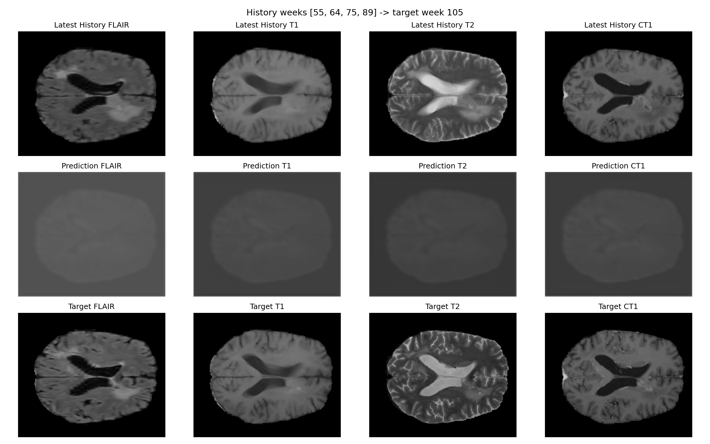
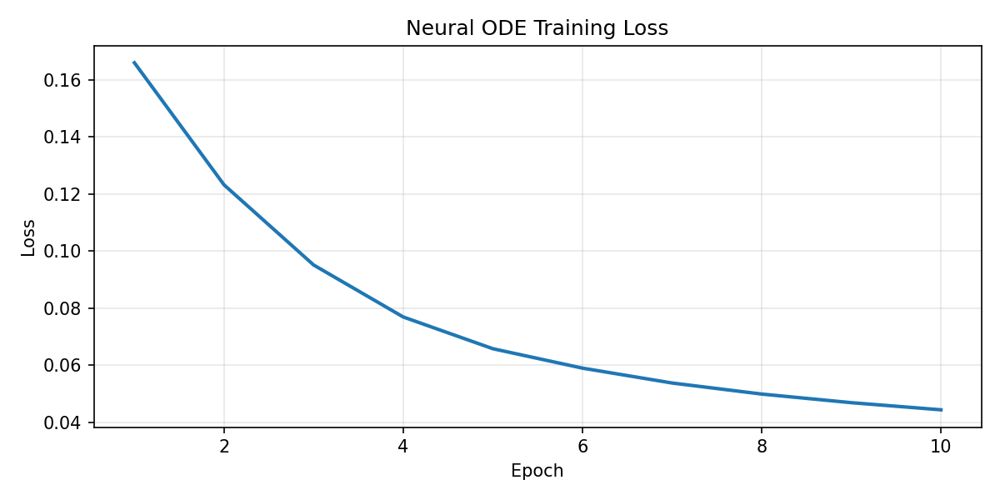
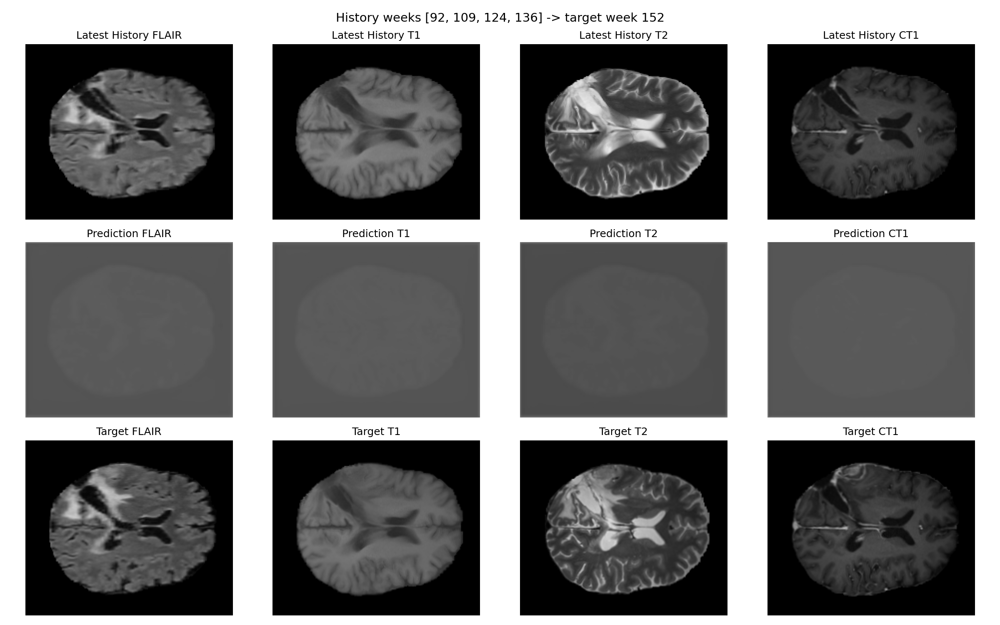
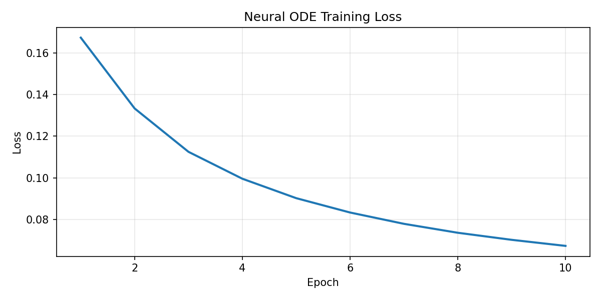

What was unified
- physics-informed 3D forecasting branch
- cleaned Neural ODE implementation
- prefix-history forecasting refinement
- current slim merged experiment
glioblastoma-evolution
A compact summary of what was built, what was measured, and what the two-patient local dataset actually supports.
The learned models run end to end and produce useful visualizations, but on the current tiny cohort a simple persistence baseline remains much stronger.
Strict future-week holdout from the cleaned branch and the prefix-history smoke run.
| Branch | Patient | Held-out week | Model MSE | Baseline MSE | Model MAE | Baseline MAE |
|---|---|---|---|---|---|---|
| Neural ODE strict holdout | patient_007 | 105 | 0.04119 | 0.00399 | 0.16927 | 0.03153 |
| Neural ODE strict holdout | patient_067 | 152 | 0.02426 | 0.00752 | 0.14075 | 0.04469 |
| Prefix-history smoke | patient_007 | 105 | 0.04039 | 0.00396 | 0.16903 | 0.03225 |
| Prefix-history smoke | patient_067 | 152 | 0.06532 | 0.00479 | 0.22187 | 0.03243 |
Best branch result: context size 2 improved the learned model, but the baseline still won on both patients.




Rerun the same pipeline on the full LUMIERE cohort once the archive is available locally. The current evidence is only strong enough for a feasibility study.